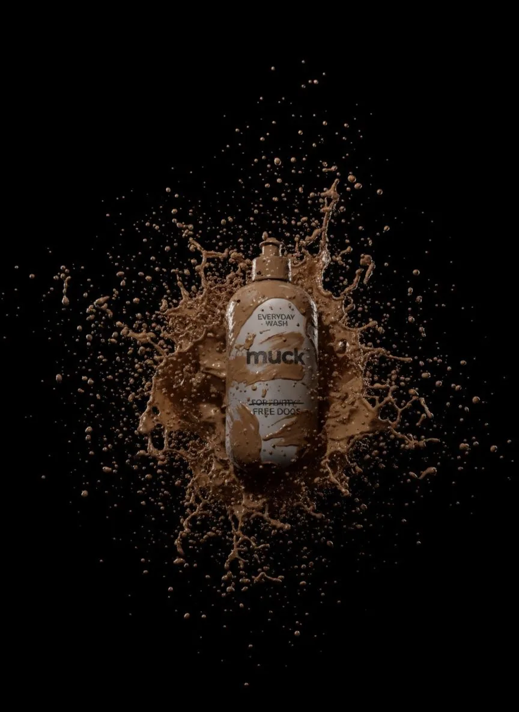
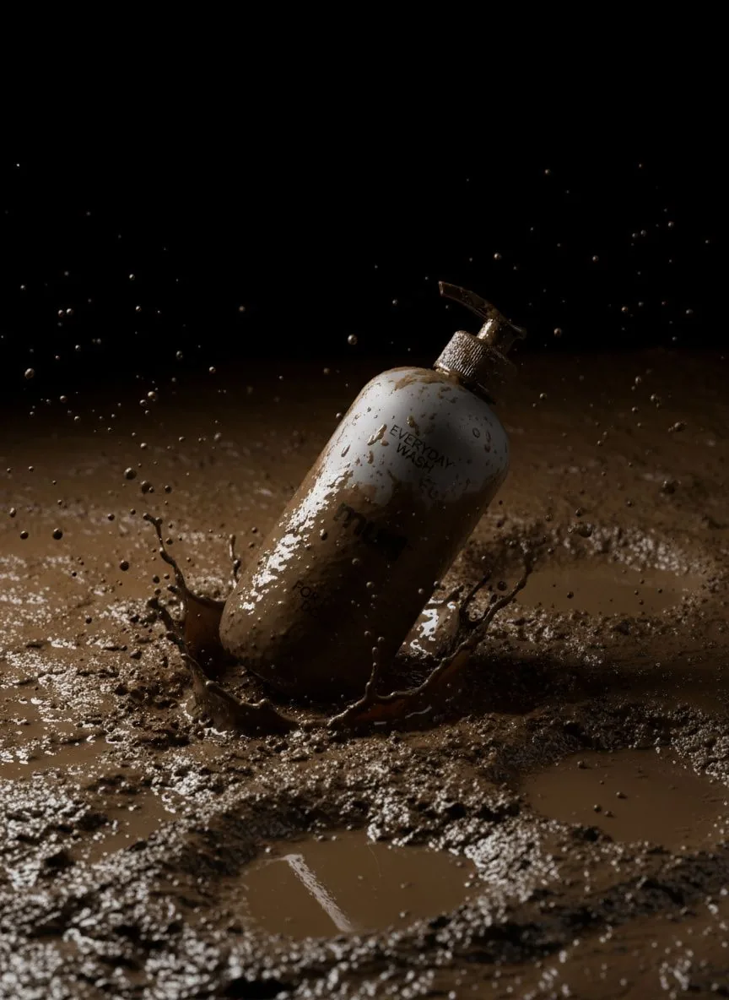
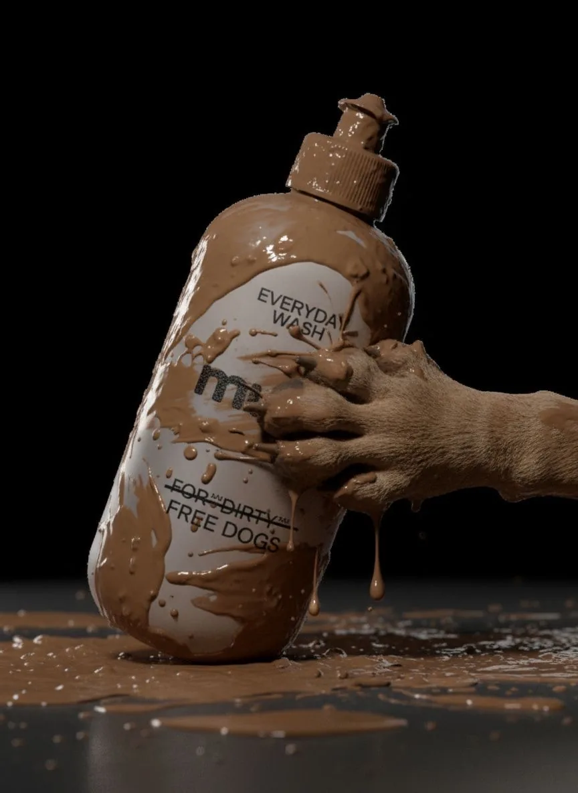
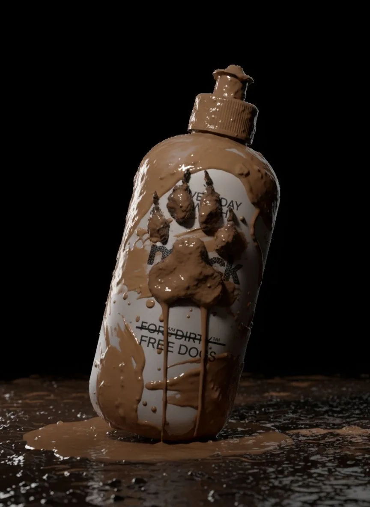
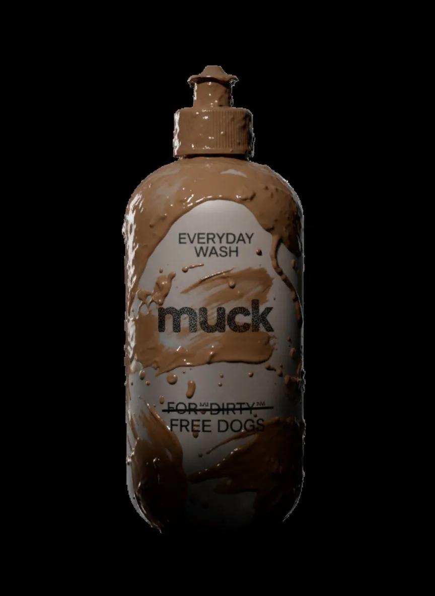
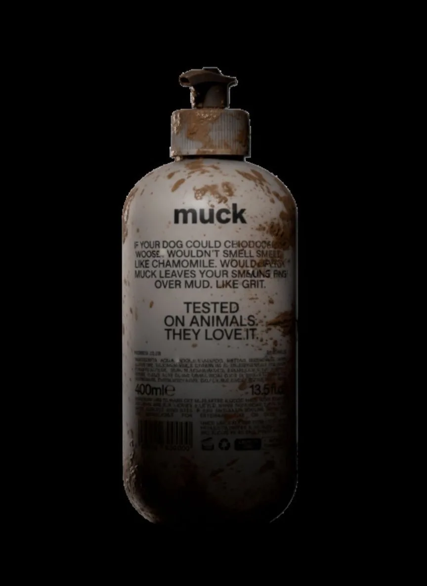

Image / advertisement
Muck Everyday Wash
A wash that argues against the entire category it sits in. Submitted to Filmsupply EditFest as an advertisement, and written as a manifesto.
- Year
- 2025
- Kind
- Image
- Role
- Concept, art direction, generative production, edit
- Frames
- 16:9 film, product stills
The format problem
For dirty-free dogs.
Every product in this category sells a dog that smells like dessert. Muck sells the mud instead, which means the packaging has to survive being photographed inside it.






Open the work
Primary sources.
Structure
Dogs are dogs.
The film is a list. It spends four lines naming what a dog is not, then gives the rest of its length to what a dog is.
-
Act I
Dogs are not
Toys. Princes and princesses. Handbag dolls.
-
Act II
Dogs are not
Lavender, chamomile, vanilla, blueberry muffins.
-
Act III
Dogs are dogs
Let them roll in muck. Let them smell like true dogs.
How it was built
Pipeline.
The manifesto was written first and everything else was cut to it, including the packaging.
The copy came first; the film was cut to the list rather than the other way round.
Bottle, label, and mud states generated as one consistent product set.
Cut for Filmsupply EditFest under the advertisement category.
Landscape master for the festival, packaging stills for the campaign board.